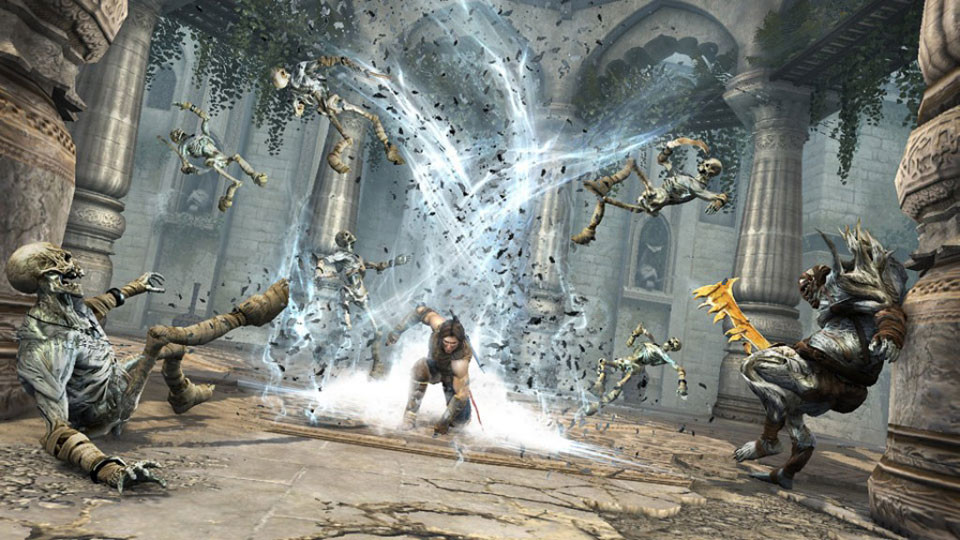

Prince of Persia: The Forgotten Sands is a multi-platform
video game produced by Ubisoft, which was released on May 18,
2010, in North America and on May 20 in Europe. The games mark
a return to the storyline started by Prince of Persia: The Sands
of Time. Prince of Persia: The Forgotten Sands is the title
of four separate games with different storylines. The main
game was developed for PlayStation 3, Xbox 360, and Microsoft
Windows, while the other three are for the PlayStation Portable, Nintendo DS, and Wii.
The PSP and Wii versions were developed by Ubisoft Quebec;
the Playstation 3, Xbox 360 and Windows versions were handled
by Ubisoft Montreal with the help of Ubisoft Singapore;
and the Nintendo DS version was made at Casablanca.